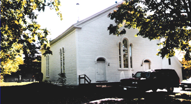
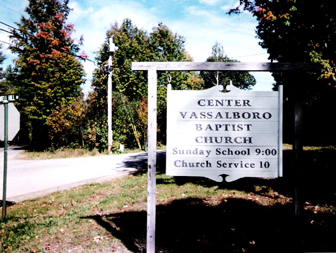
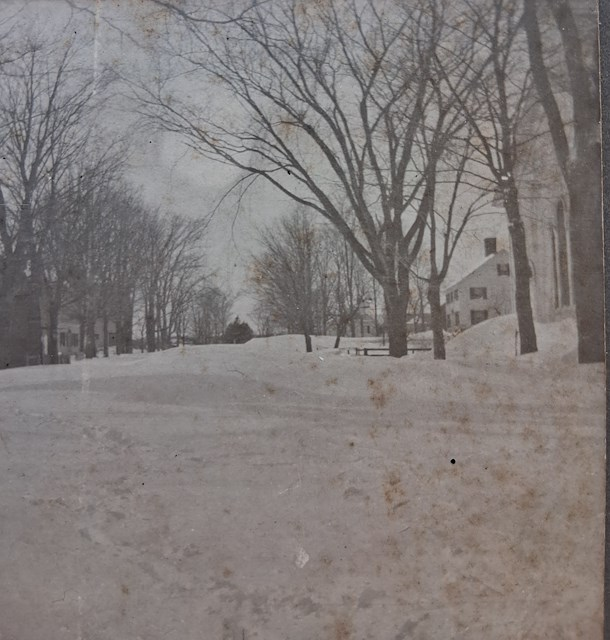
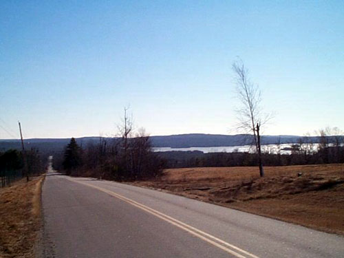
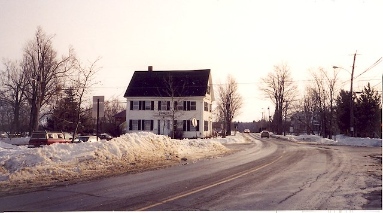
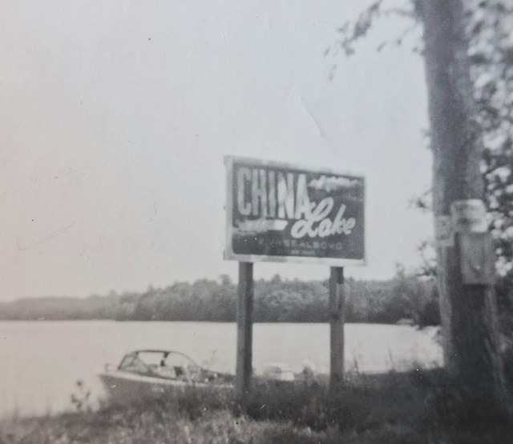

Center Vassalboro Baptist Church, off Crowell Hill and Cross Hill Road. This building is now part of the American Baptist Churches of Maine.

The sign for Center Vassalboro Baptist Church, off Crowell Hill Road.

A winter storm off Bog Road

Taber Hill Road, looking towards Webber Pond.

The Revere House off Main St (Route 32).

The sign for China Lake off the East Vassalboro boat landing.